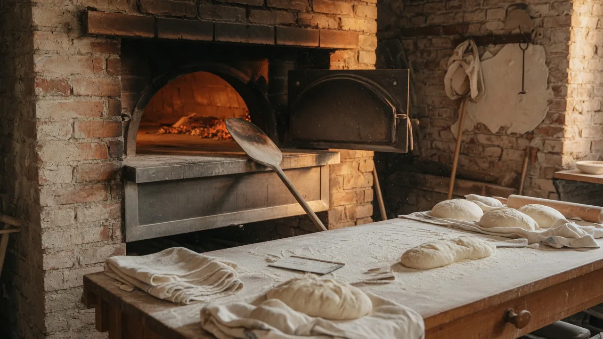
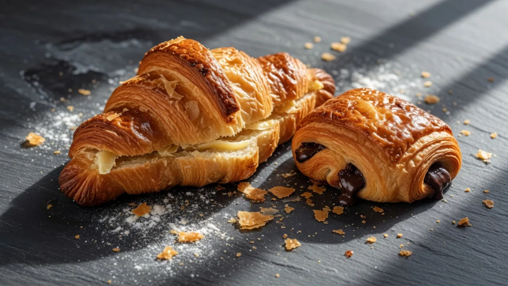

Boulangerie artisanale · Lyon
Le goût du pain, au cœur des Terreaux.
Pâte, temps et cuisson attentive : chaque jour, le fournil sort des miches de caractère et des viennoiseries à partager.

La maison
Une boulangerie de quartier, simplement.
À deux pas des Terreaux, le comptoir rassemble l’essentiel du quotidien : une croûte bien dorée, une viennoiserie du matin, une douceur choisie sans se presser.
Nous cultivons une table généreuse, accueillante et résolument lyonnaise — du fournil à la rue.
« Une odeur de pain qui invite à entrer. »
Le fournil
Les essentiels du comptoir
Une sélection pour les repas ordinaires comme pour les moments qui comptent.

-
Pains de caractère
Miches et pains de table aux textures franches, pour accompagner chaque heure du jour.
-
Viennoiseries du matin
Feuilletages délicats et gourmandises à savourer avec le premier café.
-
Douceurs de saison
Créations au fil des envies, à emporter ou à offrir pour prolonger le plaisir.
À Lyon
Le rendez-vous gourmand des Terreaux.
Venez chercher le pain du jour dans le 1er arrondissement, au rythme du fournil.
Coordonnées
Le Fournil des Terreaux
Boulangerie artisanale · Quartier des Terreaux · Lyon
Les horaires détaillés seront précisés sur place et ici prochainement.